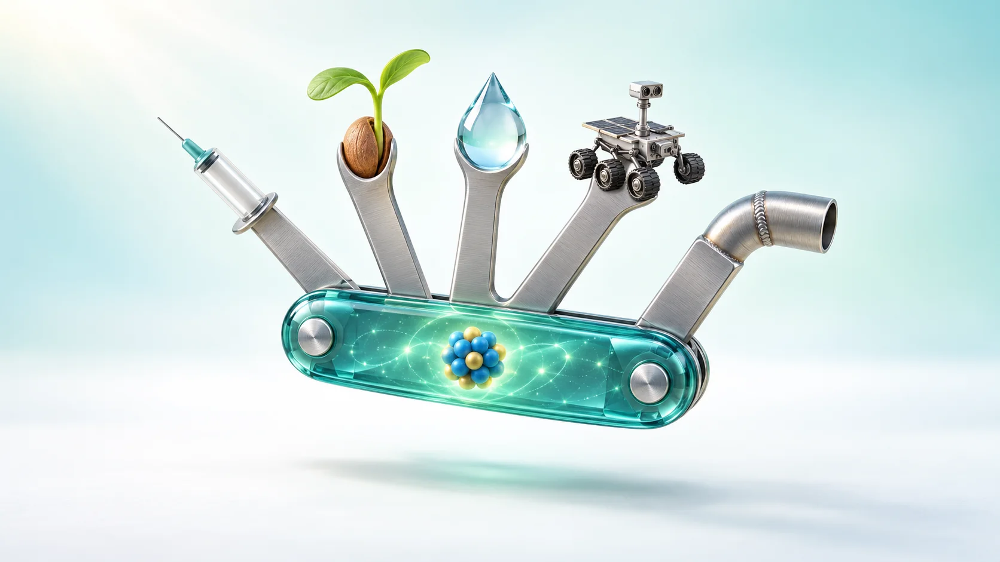
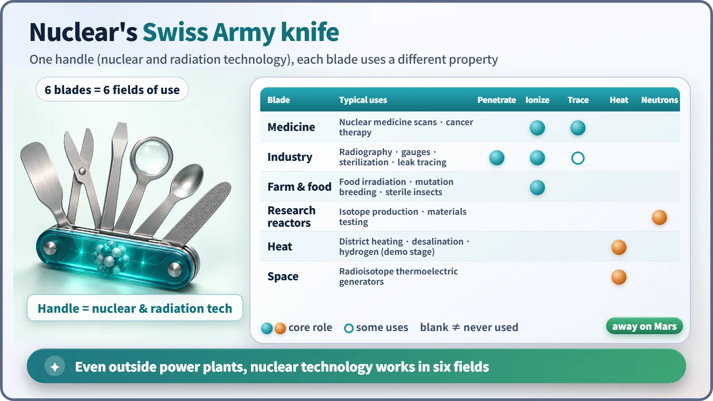
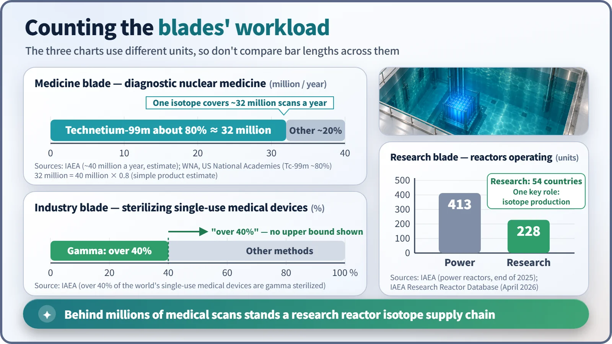

Society, Environment & the Future · 276
Nuclear's Swiss Army Knife — Non-Power Applications Beyond Electricity
One handle, many blades: medicine, industry, farming, research reactors, heat and space each use a different property of nuclei and radiation.

Nuclear technology does far more than make electricity. The same know-how for handling atomic nuclei and radiation folds out into medicine, industry, farming and food, research reactors, heat supply and space power, and each field uses a different property: penetration, ionizing energy, traceability, heat or neutrons.
Let's start with a pop quiz. Which of these has something to do with nuclear technology?
- The disposable syringe you got at the clinic
- The images taken during a heart scan
- The inspection of a welded joint in an aircraft engine
- The power supply of a Mars rover
The answer is all of them. Say "nuclear" and most people picture a domed power plant. But the energy that comes out of atomic nuclei is at work in far more places than the power grid. Today we'll spread the whole map out on one page. The topic is non-power nuclear applications: everything nuclear technology does other than generate electricity in a power plant.
One handle, many blades
You know the Swiss Army knife: one handle with a blade, scissors, a screwdriver and a bottle opener folded inside. Nuclear technology works the same way. The handle is a single body of know-how, handling atomic nuclei and radiation, but what it does depends entirely on which blade you fold out.
The blades differ because each one uses a different property. There are five big ones.
- Penetration: gamma rays and X-rays pass through objects with only part of the beam absorbed along the way. That lets us look inside things.
- Ionizing energy: radiation carries enough energy to break the genetic material (DNA) of cells and microbes. It can kill germs or attack cancer cells.
- Traceability: even tiny amounts of radiation can be picked up by a detector, so we can follow where a substance goes.
- Heat: the heat released by fission or by radioactive decay.
- Neutrons: the neutrons that fill a reactor can be aimed at other materials to make new substances or to look inside them.

Folding out the blades one by one
The medicine blade. This is the blade closest to everyday life. For diagnosis, a tiny amount of a radiation-emitting drug is put into the body, and a special camera photographs where it collects. These are called nuclear medicine procedures, and the International Atomic Energy Agency (IAEA) estimates that about 40 million are performed worldwide every year. For treatment, radiation is concentrated on cancerous tissue to attack it. [1]
The industry blade. Typical uses are non-destructive testing, which images cracks inside welds and pipes without cutting them open, and gauges that continuously measure the thickness of paper or steel sheet from how much radiation gets through. There is also radiation sterilization, which disinfects syringes and gloves right inside their packaging. According to the IAEA, more than 40% of the world's single-use medical devices are sterilized with gamma rays. That's why quiz item 1 was correct. [2]
The farm and food blade. Food irradiation exposes food to radiation to reduce pathogens and pests. Mutation breeding irradiates seeds to create variations and then selects the best new varieties; more than 3,400 such varieties are registered in an international database. The sterile insect technique, in which male pests are sterilized with radiation and released, was used to drive a livestock pest out of North America. [3]
The research reactor blade. Research reactors don't generate electricity. Their purpose is neutrons. They use those neutrons to make medical isotopes, test materials and process silicon for semiconductors. IAEA data show 228 of them operating in 54 countries. [4]
The heat blade. Here the heat from a plant is used for district heating or for desalination, turning seawater into fresh water. In Switzerland and China there are places where nuclear plant heat warms neighborhoods. Making hydrogen with very high-temperature heat is still at the research and demonstration stage.
The space blade. Far out in space, where sunlight is weak, a radioisotope thermoelectric generator (RTG) makes the electricity. It converts the heat given off by decaying plutonium-238 into electricity. It is not a reactor, and there is no chain reaction. It powers the Mars rover Perseverance, delivering about 110 watts at the start of the mission, roughly one incandescent light bulb. So it does make electricity, but as a small power pack on a spacecraft, not a power plant. That's quiz item 4. [5]
"Doesn't exposure make things radioactive?" Three misconceptions
First: things exposed to radiation become radioactive. No. The World Health Organization (WHO) and the IAEA state that food and medical devices treated with gamma rays, electron beams or X-rays at approved energies do not become radioactive. It's a bit like laundry dried in the sun: it doesn't start glowing.
Second: every radiation application needs a reactor. Not so. Many radiotherapy machines in hospitals are accelerators that make X-rays from electricity, and some imaging drugs are made in an accelerator called a cyclotron. Still, some blades truly do need a reactor. That's the next story.
Third: non-power applications are either perfectly safe or inherently dangerous. Neither. Each blade uses a different radiation source, and all of them are used under regulatory licensing and dose control, the way a knife needs a sheath and a safety lock.
Counting the blades' workload

The units are all different, so you can't rank the blades against each other, but the medical numbers are especially striking. About 80% of nuclear medicine procedures rely on a single isotope, technetium-99m. Multiply 40 million by 80% and you get about 32 million procedures a year. This isotope has a half-life of about 6 hours, so it disappears from the body quickly, and for exactly that reason it can't be made in advance and stockpiled. [6] [7]
So its parent substance, molybdenum-99, has to be produced continuously, and the main producers are research reactors. There are 413 power reactors (end of 2025) and 228 research reactors, so by count research reactors are roughly half as many. Not every research reactor makes isotopes, but this blade is so important that when one of the few research reactors producing molybdenum-99 in bulk shuts down for maintenance, hospitals around the world start worrying about their scan schedules. In 2009–2010, several major research reactors were down at the same time, and there was a real supply shortage. [8] [4]
A simple relationship is handy here: radioactivity is proportional to the number of atoms, activity = decay constant × number of atoms. The shorter the half-life, the larger the decay constant. A short-lived substance gives a clear signal from a small amount and fades quickly, which is ideal for diagnosis, but it also has to be made and shipped steadily.
Remember: one handle, many blades
Nuclear technology doesn't end with the power plant. From the same handle, penetration folds out into inspection; ionizing energy into sterilization, therapy and breeding; traceability into diagnosis; heat into district heating, desalination and space power; and neutrons into isotope production and research.
Next time you tear open the packaging of a syringe at a clinic, remember that one blade of nuclear's Swiss Army knife has already been there.